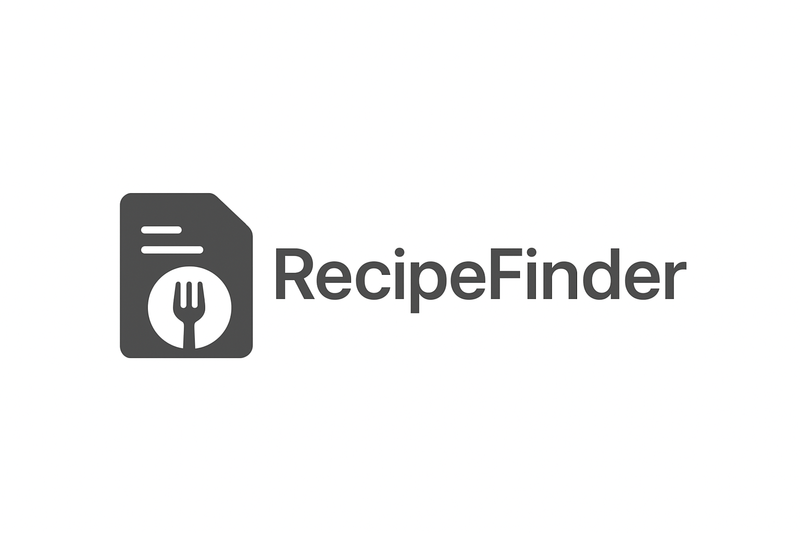
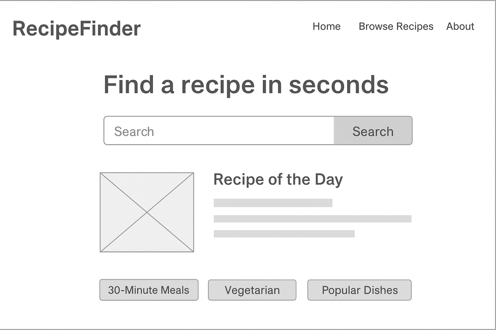
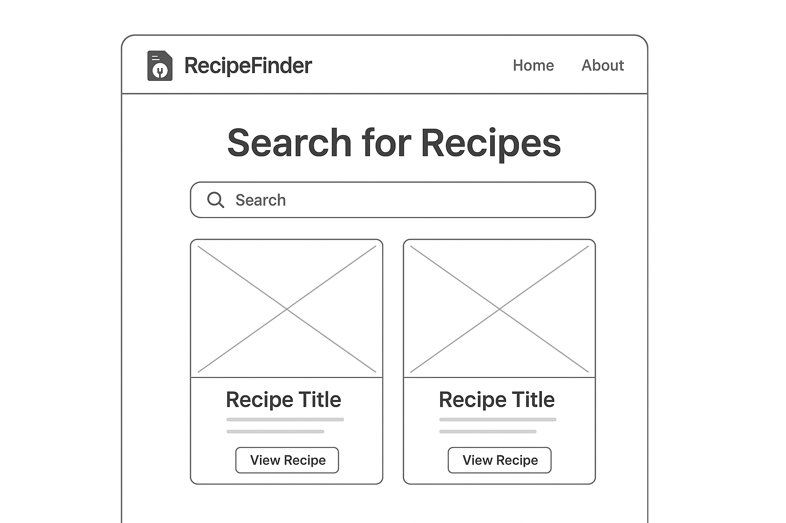

Overview
Purpose
The purpose of RecipeFinder is to help users discover recipes based on the ingredients they already have at home. It allows people to search, filter, and explore meals that fit their preferences or dietary needs while cutting down on food waste.
Audience
RecipeFinder is designed for home cooks, college students, and busy individuals who want to prepare easy and affordable meals. It is especially useful for people who don’t have time to scroll through long recipe blogs and just want quick, useful ideas.
Dynamic elements
JavaScript will power a live recipe search and filtering system. Users can type in ingredients, select cuisine types, or apply dietary filters such as vegetarian or gluten-free. The site will display recipe cards that update instantly as filters change. There will also be a “Recipe of the Day” section that rotates daily using JavaScript date logic.
Branding
Website Logo
Style Guide
Color Palette
Palette URL: https://coolors.co/ff8c42-3e4a59-fcd581-fafafa-333333| Primary | Secondary | Accent 1 | Accent 2 |
|---|---|---|---|
| #FF8C42 | #3E4A59 | #FCD581 | #FAFAFA |
Typography
Heading Font: Montserrat
Paragraph Font: Open Sans
Normal paragraph example
RecipeFinder helps you discover delicious meals that match your ingredients, saving you time and money. Find inspiration and start cooking with confidence today.
Colored paragraph example
Turn whats already in your kitchen into something amazing with RecipeFinder.
Navigation
Content
Home page
The home page will introduce the site with a short description and a search bar for ingredients. It will also feature a “Recipe of the Day” card and a few quick category links such as “30-Minute Meals,” “Vegetarian,” and “Popular Dishes.”
Browse Recipes Page
This page will display all available recipes as cards, each showing a title, image, and short description. Users can use filters or a search bar to find specific types of meals. Clicking a card reveals full recipe details with steps and ingredients.
About Page
The About page will include a short background story on why the site was created, how it helps people reduce food waste, and a contact form for feedback.
Wireframes
Create two wireframes for your site. One for each page and list them here
Home
The Home page wireframe includes the logo and nav at the top, a hero section with the search bar, followed by featured recipe cards and a footer. [Any additional details about home that the wireframe does not make clear]
Browse Recipes Page
The Browse Recipes wireframe shows a filter sidebar on the left, recipe grid on the right, and a simple layout that adapts for mobile. [Any additional details about page 2 that the wireframe does not make clear]
